Current · Maynooth, Ireland
Research Assistant & Fellowship Project
Department of Electronic Engineering · Maynooth University
Working on a fellowship project involving an igus Delta Robot.
Robotics · Embedded AI · Intelligent systems
Robotics and AI engineer building practical, intelligent systems — currently pursuing an MSc in Robotics and Embedded AI at Maynooth University.
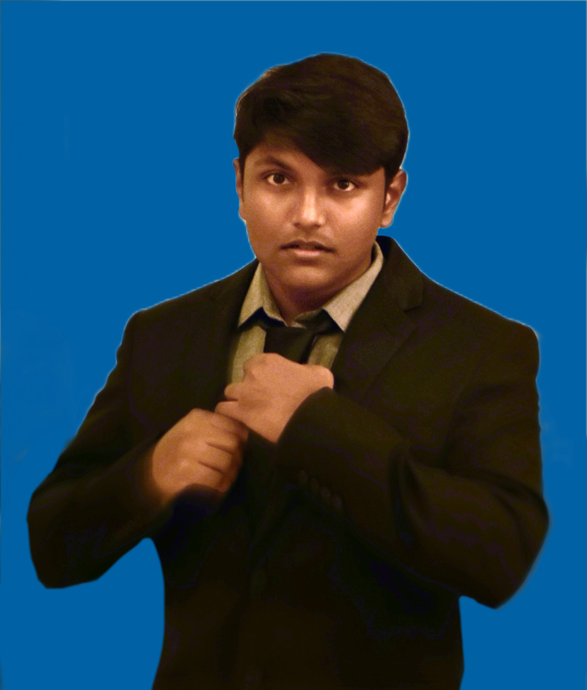
01 / ENGINEERING PORTFOLIO
01 — About
Robotics and AI Engineering graduate currently pursuing an MSc in Robotics and Embedded AI at Maynooth University. My experience spans robotics, machine learning, cloud and Generative AI, and data-driven engineering.
I work with Python, MATLAB, C and robotics systems, with hands-on experience in ROS2, system integration, perception and control concepts, and real-world validation.
02 — Experience
Current · Maynooth, Ireland
Department of Electronic Engineering · Maynooth University
Working on a fellowship project involving an igus Delta Robot.
Jul 2025 — Feb 2026 · Dubai, UAE
Dubai, UAE
Dec 2024 — Mar 2025 · Bengaluru, India
Eviden (Atos)
Apr 2025 — May 2025 · Bengaluru, India
U R Rao Satellite Centre (ISRO)
Mar 2023 · Bengaluru, India
Volvo Group Truck Operations · Volvo India Pvt. Ltd.
03 — Education
Sep 2026 — Present
Maynooth University · Ireland · Full-time · NFQ Level 9
2021 — 2025
NMAM Institute of Technology (VTU) · Nitte, Karnataka, India · CGPA 8.09/10
2021
Sri Chaitanya PU College · Mangalore, Karnataka · 89 percentile
2019
Dr. MRSM English Medium High School · Thokur, Mangalore · 91 percentile
04 — Projects
A selection of academic and independent work across robotics, AI and connected systems.
Major project · 2025
Developed a machine-learning wearable concept for monitoring acoustic emissions associated with hip implants. Patent application filed.
Mini project · 2024
Built and tested a mobile robot controlled through a smartphone gesture interface, applying robotics integration and control concepts.
Other project · 2024
Classified coffee leaves using a convolutional neural network.
Other project · 2024
Built a game development project using Unity.
Other project · 2023
Created a door-lock system using Arduino programming and RFID access.
Other project · 2023
Built an LED system synchronized to sound using an 8051 microcontroller.
Intel AI for Youth · 2022
Implemented a Python-based natural-language translation project as part of the Intel AI for Youth programme.
Academic project · 2021
Developed an IoT-based irrigation system for an academic project.
05 — Technical skills
Python, C, MATLAB, ROS2, Simulink, LabVIEW
Machine learning, neural networks, CNNs, computer vision, NLP, data analysis
ROS, ROS2, mobile robots, drones, PLCs, control algorithms, robotic systems, perception
AWS Bedrock, S3, Lambda, SQS, Azure OpenAI, Azure Functions, Azure AD, cloud computing
Linux / Ubuntu, Git / GitHub, Jira, CNC machining, 3D printing, IoT systems and communications, Unity, AR / VR, game rendering
Mathematical modelling, analytical problem-solving, modular programming, algorithm development, system integration
06 — Beyond the lab
07 — Certifications
Select a credential to view its certificate.
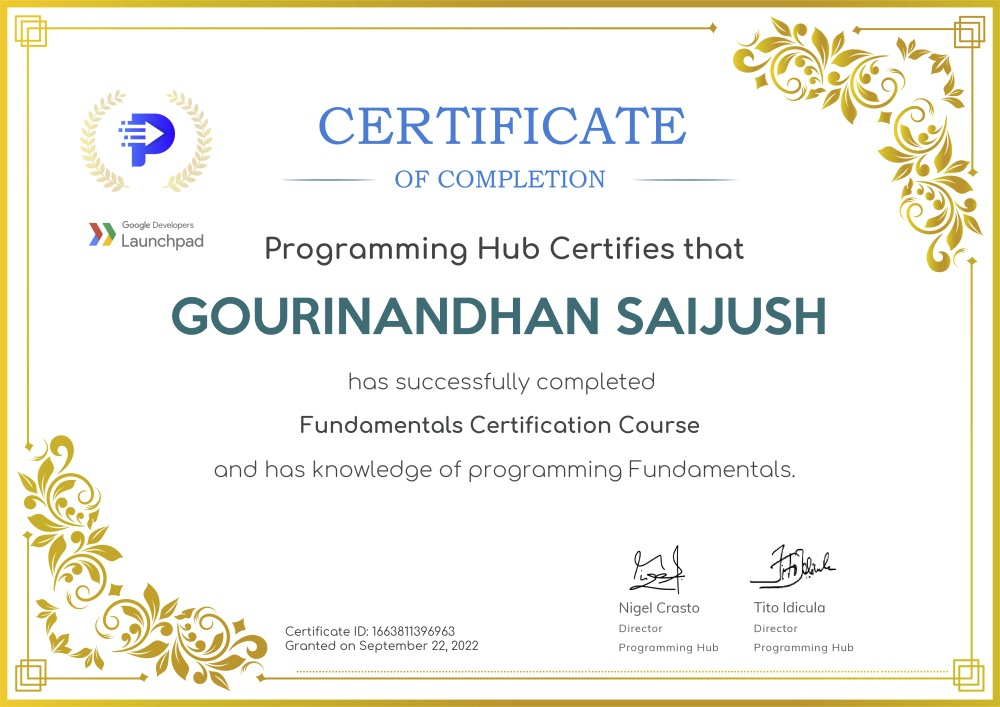
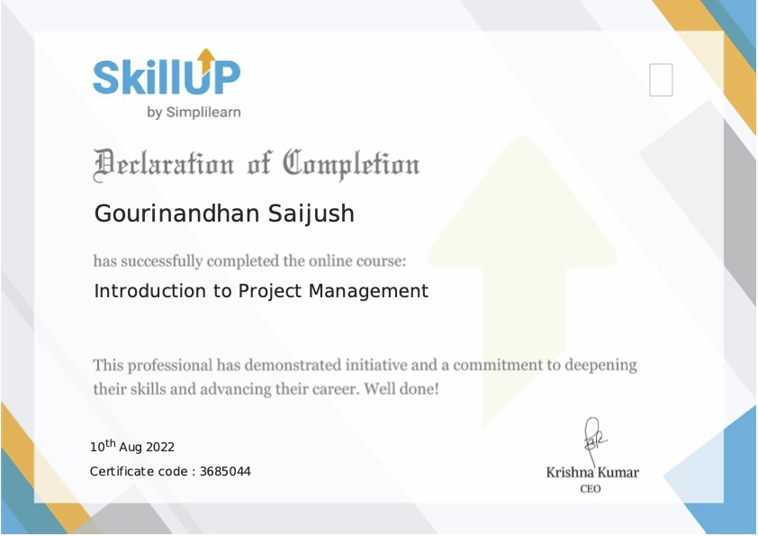
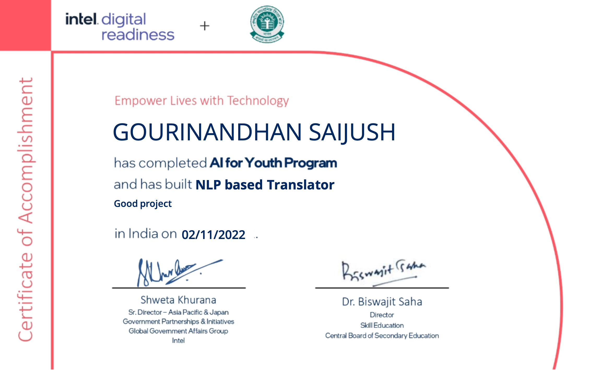
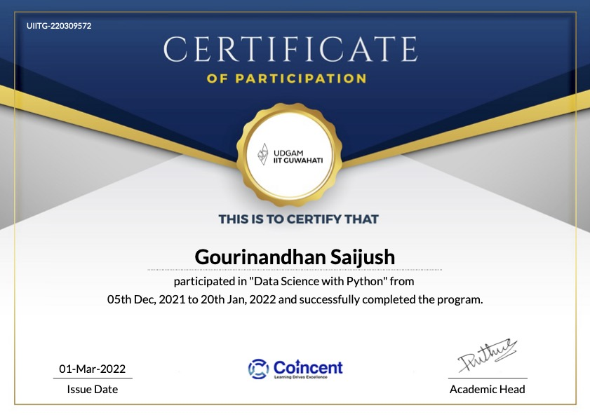
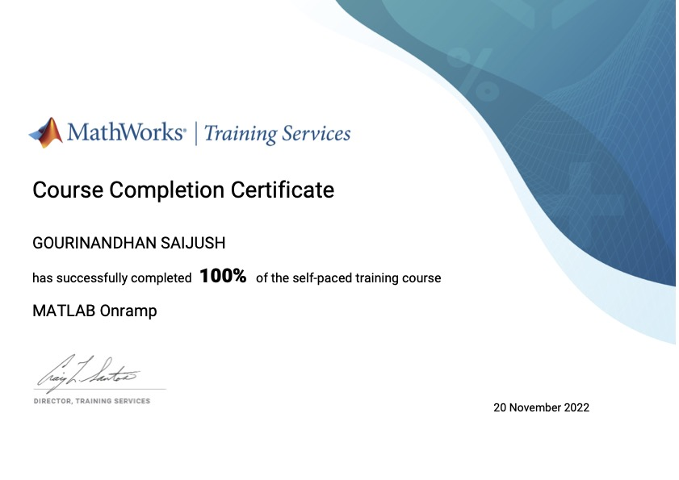
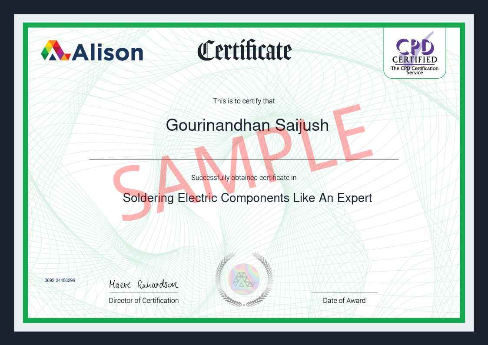
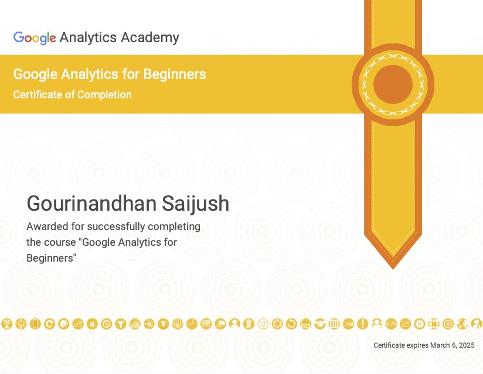
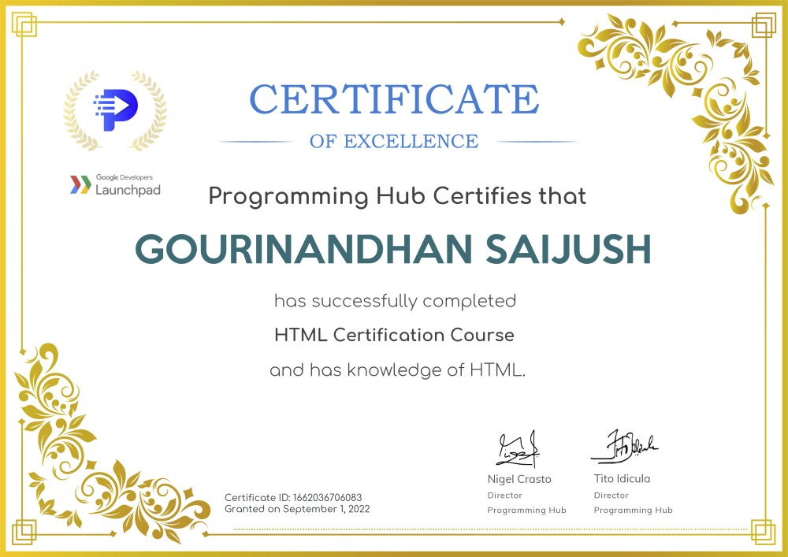
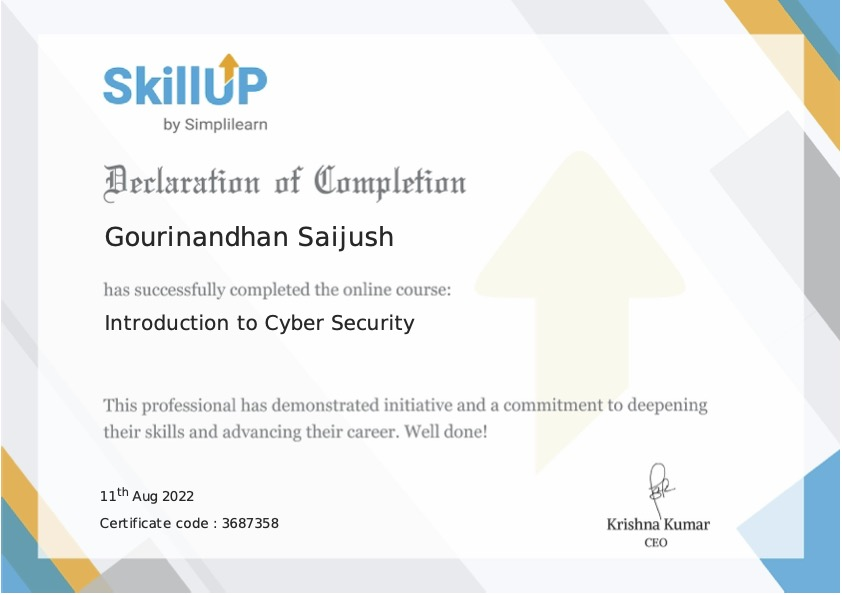
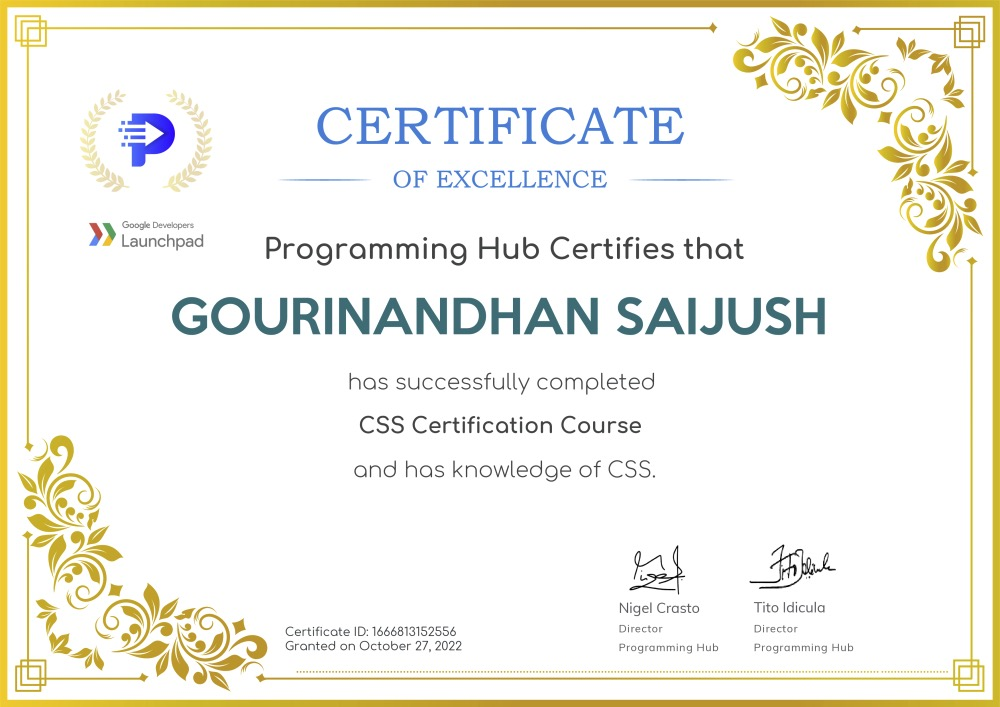
08 — Contact
Current · Ireland
+353 89 986 9910
Maynooth, Ireland
Alternate · India
+91 8088395022
Karnataka, India
Nationality: Indian